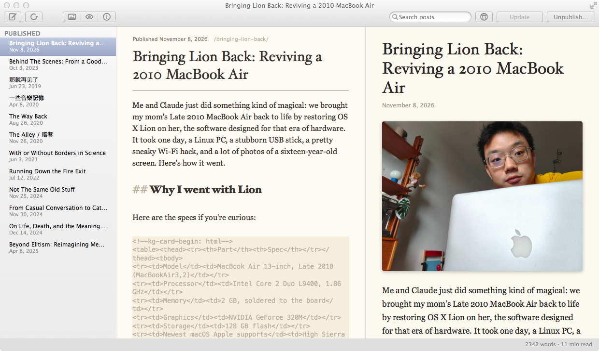
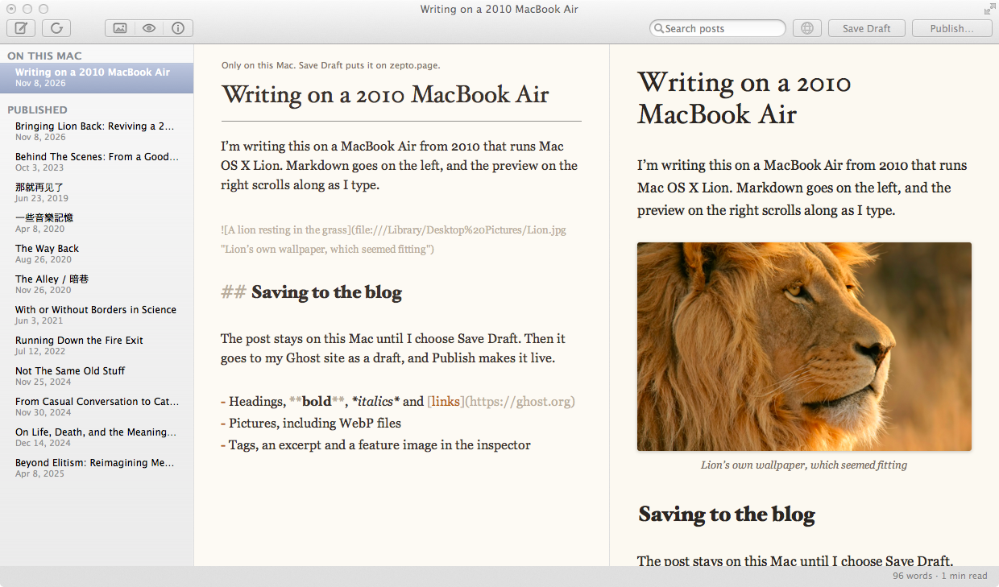
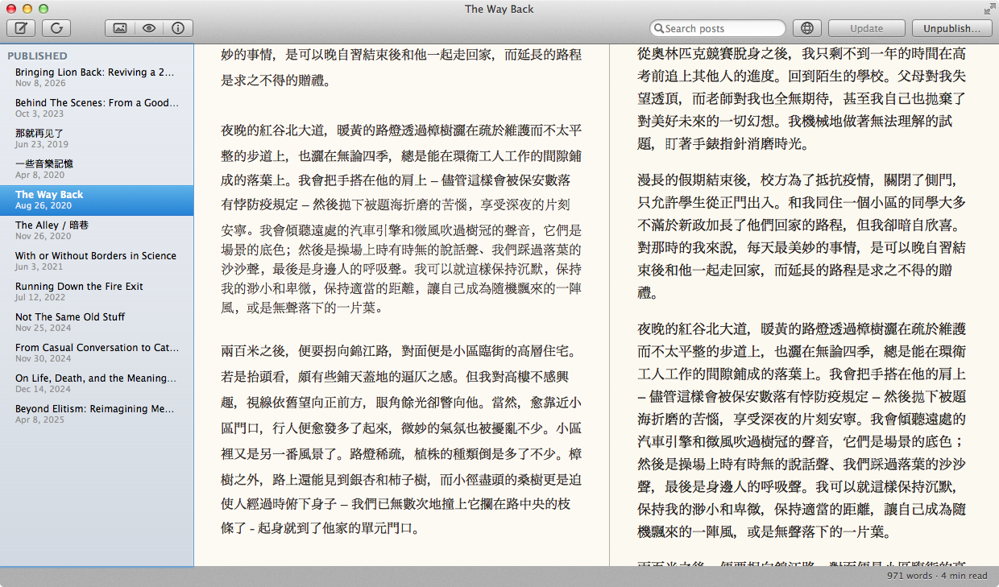

Planchette
By XGZepto · A Markdown editor for blogs that run on Ghost.
Screenshots



Description
Planchette is a Markdown editor for blogs that run on Ghost. I write on the left, the preview on the right scrolls along with me, and the sidebar keeps drafts, scheduled posts and published posts in separate groups.
Edits sync in both directions. A change I make in Ghost's web editor shows up in Planchette, and if a post changed on the web after I opened it, Planchette asks before it overwrites anything. Pictures work too, including WebP files that Lion can't open by itself.
Planchette is named after the pointer on a spirit board, which people used to fit with a pencil for spirit writing. 👻
What's New in Version 0.4
- Long titles wrap, and the header scrolls away with the text.
- Full screen writing that keeps the preview next to you.
- A find bar.
- Drag pictures into a post or paste them.
- Schedule a post to go out later.
- Chinese, Japanese and Korean text gets even line spacing.
- Posts from the blog convert to Markdown without losing spaces or formatting.